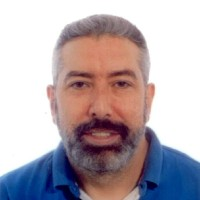

About me
En esta página podrás conocer un poco más sobre mí.

Descripción personal
Dr. David Buján Carballal es Ingeniero en Informática (2000) por la Universidad de Deusto, tiene un Máster en e-Business (2001) y un Doctorado en Ciencias de la Computación (2016) por la misma universidad. Es docente en la Facultad de Ingeniería de esta universidad (Sistemas Operativos, Ingeniería Web, Procesos del Software y Calidad) y Coordinador del Área Departamental de Informática. Pertenece al grupo de investigación MORElab y al grupo de investigación reconocido del sistema universitario vasco DEUSTEK, asociado al instituto de investigación DeustoTech. Sus principales áreas de investigación son Linked Data (Web of Data), Social Web y Semantic Web en el ámbito de las tecnologías web y semánticas, así como Blockchain y Grid Computing en el ámbito de los recursos y sistemas distribuidos. Es autor de varias comunicaciones en reuniones científicas nacionales e internacionales, así como de artículos en revistas, ponencias y capítulos de libro, y revisor en varias conferencias internacionales. Ha colaborado en varios proyectos de investigación de ámbito nacional e internacional, así como en proyectos bajo demanda para la empresa privada. Profundizó su experiencia en tecnologías semánticas y web 2.0 durante su estancia en el Information Management Group de la Universidad de Manchester, así como en Grid y Cloud computing gracias a sus visitas a varios centros nacionales e internacionales de referencia, como son: UCM, CESGA, IFCA, University of Westminster. Colabora en proyectos de fomento de vocaciones STEM y es el Responsable de Equipos de la FIRST LEGO LEAGUE EUSKADI en la sede de Bilbao (Universidad de Deusto).
Estudios realizados
- Doctorado en Ciencias de la Computación (Universidad de Deusto)
- Máster en e-Business (Universidad de Deusto)
- Ingeniería Informática (Universidad de Deusto)
- C.O.U. (Salesianos de Santander)
- B.U.P. (Salesianos de Urnieta)
- E.G.B. (Salesianos de Cruces-Barakaldo)
Gustos y aficiones
FIRST Lego League Euskadi Deusto 2026
FIRST Lego League Euskadi Deusto 2025
FIRST Lego League Euskadi Deusto 2024
FIRST Lego League Euskadi Deusto 2023
FIRST Lego League Euskadi Deusto 2022
FIRST Lego League Euskadi Deusto 2021
FIRST Lego League Euskadi Deusto 2020
Tesis doctoral
Su tesis se enmarcó en el área de la Semantic Grid y lleva por título "Nuevas capacidades en el descubrimiento de recursos grid basadas en tecnologías semánticas". Participa en la red Alastria y en otras redes nacionales de investigación reconocidas por el MEC y el MICIIN. Igualmente ha formado parte de Comités de Organización y Comités de Programa de varias conferencias internacionales (HAIS-2021, SOCO-2021, CISCI-2021, ICEUTE-2021, IoT-2019, CAEPIA-2011, JENUI-2006). Es autor de varias comunicaciones en reuniones científicas nacionales e internacionales, así como de artículos en revistas, ponencias y capítulos de libro, y revisor en varias conferencias internacionales. Ha colaborado en varios proyectos de investigación de ámbito nacional e internacional, así como en proyectos bajo demanda para la empresa privada. Profundizó su experiencia en tecnologías semánticas y web 2.0 durante su estancia en el Information Management Group de la Universidad de Manchester, así como en Grid y Cloud computing gracias a sus visitas a varios centros nacionales e internacionales de referencia, como son: UCM, CESGA, IFCA, University of Westminster. Más información aquí.